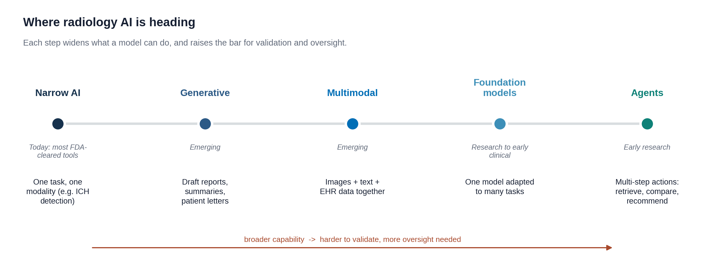
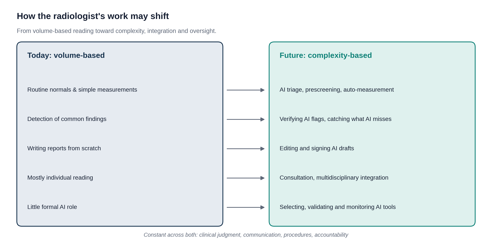

Will AI replace radiologists, and what should you learn now?
The Future of AI in Radiology
Where the technology is heading, how the radiologist's job may change, and the skills that will last
Overview
The last lesson of the course looks ahead. Nobody knows exactly what radiology will look like when you are in practice, but the direction is clear enough to plan for. About 15 minutes.
By the end of this lesson you can:
Explain why "AI will replace radiologists" has not come true so far.
Describe the next kinds of AI coming to radiology.
Say which parts of a radiologist's work are likely to change and which are likely to stay.
Name the skills worth building now, whatever specialty you choose.
"Stop training radiologists"?
In 2016, the AI pioneer Geoffrey Hinton said that people should stop training radiologists, because within five years deep learning would do better. Ten years later, AI is in wide use, and radiologists are busier than ever. Many countries report a shortage of radiologists, as the number of scans keeps growing faster than the number of people to read them.
Why was the prediction wrong? You now know enough to answer:
Most AI tools do one narrow task (Lesson 3.1). A radiologist does hundreds, and a single scan can hold many unrelated findings, like Mr. Diaz's clot and nodule.
Accuracy on a test set is not the same as working safely at every hospital (Lesson 3.2).
Someone has to check the output, take responsibility and talk with patients and other doctors (Lesson 3.4).
Reading images is only part of the job. Radiologists also do procedures, advise on which test to order, and join tumor boards and team meetings.
A common saying sums it up: AI will not replace radiologists, but radiologists who use AI well may replace those who do not.
Where the technology is heading

Figure 1. From narrow tools to broader ones. Each step lets a model do more, and makes it harder to test and more important to oversee.
GenerativeModels that write: draft reports, summaries and patient letters (Lesson 3.1). Report drafting is already in use at some hospitals.
MultimodalModels that combine images with text and the health record, the way a radiologist reads a scan alongside the clinical history.
Foundation modelsOne large model trained on huge amounts of data, then adapted to many tasks, instead of one model built for each task.
AgentsSystems that carry out several steps on their own: pull up prior scans, compare them, and suggest a recommendation. Still early research.
One idea is already practical: opportunistic screening. Scans done for one reason contain information about other things. AI can measure bone density, calcium in the heart arteries, or liver fat on a CT done for, say, belly pain, and flag patients who may need attention. Mr. Diaz's CTPA could also be checked for heart artery calcium.
How the job may change

Figure 2. Some of today's work may shift to AI, with the radiologist checking it. Judgment, communication, procedures and responsibility stay with people.
Interactive: who will do it?
For each task, guess how it will most likely be done in ten years. The explanations give a common expert view, but nobody knows for sure.
Measuring a lung nodule and comparing it with last year's size.
Measuring and comparing is narrow, repetitive and easy to check, a good fit for AI, with the radiologist glancing to confirm.
Writing the report for Mr. Diaz's CTPA.
AI may draft it, but a radiologist reads the images, edits the draft, and signs. Lesson 3.1 showed why someone has to check.
Explaining to a surgeon at a tumor board whether a tumor can be removed.
This combines images, the whole patient's story and a conversation between doctors. It stays human.
Sorting screening mammograms into "clearly normal" and "needs a careful look."
Trials like MASAI (Lesson 3.2) show AI can safely take on part of this, with radiologists reading the exams that need it.
Doing a CT-guided biopsy of a lung nodule.
Procedures need hands, judgment in the moment and a patient's consent. AI may help plan the path, but a person does it.
Deciding whether a new AI tool is safe to use at the hospital.
Choosing, testing and monitoring AI is a growing part of the radiologist's job (Lessons 3.2 and 3.4).
What this means for you
Whatever specialty you choose, AI will be part of it. The skills that will last are the ones this course has practiced:
The basics, on your own. Anatomy, how disease looks and clinical reasoning. You cannot check an AI on something you never learned (Lesson 3.3).
Judging evidence. Ask what rung a claim reaches and whether it fits your patients (Lesson 3.2).
Knowing how AI fails. Shortcuts, false alarms, hallucinations and bias (Modules 1 and 3).
Talking with people. Explaining results and uncertainty to patients and colleagues.
Owning your decisions. Using AI as a helper while staying responsible for the result.
Knowledge check
Answer each question to continue. Any answer is fine; read the explanation.
Which is the best reason AI has not replaced radiologists so far?
Many AI tools are accurate at their one task. But a radiologist reads everything on a scan, takes responsibility, does procedures and advises other doctors.
An AI measures bone density on a CT that was done to look for kidney stones. What is this called?
Opportunistic screening uses scans done for one reason to look for other conditions, with no extra scan or radiation.
Key takeaways
The 2016 prediction that AI would replace radiologists has not come true. Demand for radiologists has grown.
AI is moving from narrow tools toward generative, multimodal and foundation models. Broader tools need more testing and oversight.
Routine measuring and sorting may shift to AI. Judgment, communication, procedures and responsibility stay with people.
Build the basics without AI, learn to judge evidence, know how AI fails, and own your decisions.
That completes the core course. Next, take the assessment.